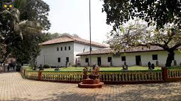

The Shivappa Nayaka Palace named after the popular 17th-century king Shivappa Nayaka of the
Keladi Nayaka dynasty is located in Shivamogga city (formerly known as Shimoga), the district
headquarters of the Shivamogga district in Karnataka state, India. It is now the site of the
Government Museum.
Though named after the Nayaka king, according to art historian George Michell, the palatial
bungalow was actually built by the 18th century Mysore ruler Hyder Ali.[1] The building is
a protected monument under the Karnataka state division of the Archaeological Survey of India.
The two storied building comprises a Durbar hall ("nobel court") with massive
wooden pillars and lobed arched panels. The living chambers on the sides are at the
upper level and have balconies and look down into the hall.
Numerous antiquities collected from near by temples and archeological sites, such
as sculptures, inscriptions and hero stones from the Hoysala era and later periods
are on display at the palace grounds.[1]
